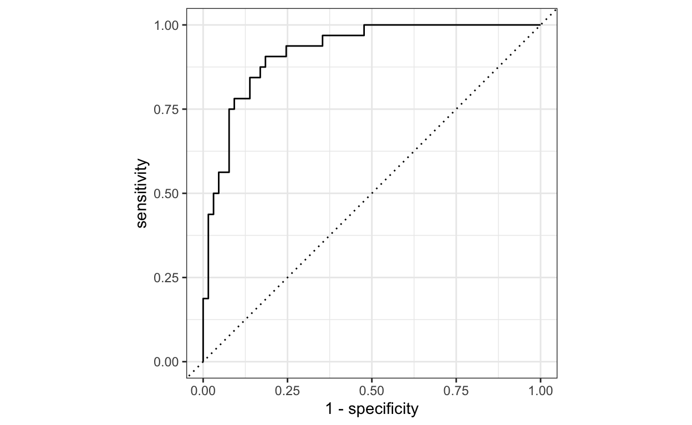

Een gids om stap voor stap een logissche regressie uit te voeren met gebruik van het tidymodels pakket
Dit is bewerking van een blog die Rahul Raoniar, Towards data science begin 2021 schreef.
In de wereld van ‘supervised machine learning’ worden vaak twee soorten analyses uitgevoerd. De ene heet regressie (voorspellen van continue waarden), de andere heet classificatie (voorspellen van discrete waarden). In deze blog geef ik een voorbeeld van een binair classificatiealgoritme, “Binaire Logistische Regressie” genaamd. Dat valt onder de Binomiale familie met een logit koppelingsfunctie. Binaire logistische regressie wordt gebruikt voor het voorspellen van binaire klassen. Bijvoorbeeld in gevallen waarin je ja/nee, winst/verlies, negatief/positief, waar/onwaar enzovoort wilt voorspellen.
Deze blog leidt jou door een proces van hoe het ‘tidymodels’-pakket te gebruiken om een model toe te passen en te evalueren met heel weinig en eenvoudige stappen.
Achtergrond van de data
In dit voorbeeld maak je gebruik maken van de Pima Indian Diabetes 2 data, verkregen uit de UCI Repository van de machine learning data (Newman et al. 1998).
Deze data zijn oorspronkelijk afkomstig van het ‘National Institute of Diabetes and Digestive and Kidney Diseases’. Het doel van de dataset is diagnostisch te voorspellen of een patiënt al dan niet diabetes heeft, op basis bepaalde diagnostische metingen die in de dataset zijn opgenomen. Bij de selectie van deze data uit een grotere databank werden verschillende beperkingen opgelegd. In het bijzonder zijn alle patiënten hier vrouwen van ten minste 21 jaar oud van Pima Indiaanse afkomst. De Pima Indian Diabetes 2-data is de verfijnde versie (alle ontbrekende waarden zijn toegewezen als NA) van de Pima Indian diabetes-gegevens. De dataset bevat de volgende onafhankelijke en afhankelijke variabelen.
Onafhankelijke variabelen (met symbool: O) - O1: pregnant: Aantal keren zwanger
- O2: glucose: Plasma glucose concentratie (glucose tolerantie test)
- O3: pressure: Diastolische bloed druk (mm Hg)
- O4: triceps: Triceps huidplooidikte (mm)
- O5: insulin: 2-uur serum insuline (mu U/ml)
- O6: mass: Body mass index (gewicht in kg/(lengte in m)\²)
- O7: pedigree: Diabetes pedigree functie
- O8: age: Leeftijd (jaren)
Dependent Variable (met symbool: A)
- A1: diabetes: diabetes geval (pos/neg)
Doel van de modellering
- aanpassen van een binair logistisch regressie-machineleermodel met behulp van de bibliotheek
tidymodels
- het testen van de voorspellingskracht van het getrainde model (evaluatie van het model) op de ongeziene/geteste dataset met behulp van verschillende evaluatiemetrieken.
Bibliotheken en Datasets laden
Stap1: Eerst moeten we de volgende pakketten worden geïnstalleerd met de install.packages( ) functie (als ze al niet zijn geïnstalleerd en ze laden met de library( ) functie.
Stap2: Vervolgens moet je de dataset binnen halen uit het mlbench pakket met behulp van de data( ) functie.
Na het laden van de data, is de volgende essentiële stap het uitvoeren van een verkennende data-analyse, die zal helpen bij het vertrouwd raken met de data. Gebruik de head( ) functie om de bovenste zes rijen van de data te bekijken.
pregnant glucose pressure triceps insulin mass pedigree age
1 6 148 72 35 NA 33.6 0.627 50
2 1 85 66 29 NA 26.6 0.351 31
3 8 183 64 NA NA 23.3 0.672 32
4 1 89 66 23 94 28.1 0.167 21
5 0 137 40 35 168 43.1 2.288 33
6 5 116 74 NA NA 25.6 0.201 30
diabetes
1 pos
2 neg
3 pos
4 neg
5 pos
6 negDe Diabetes-gegevensreeks telt 768 waarnemingen en negen variabelen. De eerste acht variabelen zijn van het numerieke type en de afhankelijke/output variabele (diabetes) is een factor/categorische variabele. Het is ook merkbaar dat veel variabelen NA waarden bevatten (missende waarde). Onze volgende taak is het de gegevens te verfijnen/wijzigen, zodat ze compatibel worden met het modelleeralgoritme. Eerst nog eens beter naar de data kijken.
Rows: 768
Columns: 9
$ pregnant <dbl> 6, 1, 8, 1, 0, 5, 3, 10, 2, 8, 4, 10, 10, 1, 5, 7, …
$ glucose <dbl> 148, 85, 183, 89, 137, 116, 78, 115, 197, 125, 110,…
$ pressure <dbl> 72, 66, 64, 66, 40, 74, 50, NA, 70, 96, 92, 74, 80,…
$ triceps <dbl> 35, 29, NA, 23, 35, NA, 32, NA, 45, NA, NA, NA, NA,…
$ insulin <dbl> NA, NA, NA, 94, 168, NA, 88, NA, 543, NA, NA, NA, N…
$ mass <dbl> 33.6, 26.6, 23.3, 28.1, 43.1, 25.6, 31.0, 35.3, 30.…
$ pedigree <dbl> 0.627, 0.351, 0.672, 0.167, 2.288, 0.201, 0.248, 0.…
$ age <dbl> 50, 31, 32, 21, 33, 30, 26, 29, 53, 54, 30, 34, 57,…
$ diabetes <fct> pos, neg, pos, neg, pos, neg, pos, neg, pos, pos, n…Voorbereiding van de gegevens
De eerste stap is het verwijderen van data rijen met NA waarden met behulp van na.omit( ) functie. De volgende stap is nogmaals het controleren van de gegevens met behulp van de glimpse( ) functie.
Rows: 392
Columns: 9
$ pregnant <dbl> 1, 0, 3, 2, 1, 5, 0, 1, 1, 3, 11, 10, 1, 13, 3, 3, …
$ glucose <dbl> 89, 137, 78, 197, 189, 166, 118, 103, 115, 126, 143…
$ pressure <dbl> 66, 40, 50, 70, 60, 72, 84, 30, 70, 88, 94, 70, 66,…
$ triceps <dbl> 23, 35, 32, 45, 23, 19, 47, 38, 30, 41, 33, 26, 15,…
$ insulin <dbl> 94, 168, 88, 543, 846, 175, 230, 83, 96, 235, 146, …
$ mass <dbl> 28.1, 43.1, 31.0, 30.5, 30.1, 25.8, 45.8, 43.3, 34.…
$ pedigree <dbl> 0.167, 2.288, 0.248, 0.158, 0.398, 0.587, 0.551, 0.…
$ age <dbl> 21, 33, 26, 53, 59, 51, 31, 33, 32, 27, 51, 41, 22,…
$ diabetes <fct> neg, pos, pos, pos, pos, pos, pos, neg, pos, neg, p…De uiteindelijke (voorbereide) gegevens bevatten 392 waarnemingen en 9 kolommen. De onafhankelijke variabelen zijn van het type numeriek/dubbel, terwijl de afhankelijke/uitgaande binaire variabele van het type factor/categorie is (neg/ pos).
Gegevensniveaus
We kunnen het referentieniveau van de afhankelijke variabele controleren met de functie levels( ). We kunnen zien dat het referentieniveau neg is (het allereerste niveau).
[1] "neg" "pos"Instellen referentieniveau
Voor een betere interpretatie (later voor het uitzetten van de ROC curve) moeten we het referentieniveau van onze afhankelijke variabele “diabetes” op positief (pos) zetten met de relevel( ) functie.
[1] "pos" "neg"Splitsing training en testset
De volledige dataset wordt in het algemeen opgesplitst in 75% train en 25% test data set (algemene vuistregel). 75% van de trainingsdata wordt gebruikt om het model te trainen, terwijl de overige 25% wordt gebruikt om te controleren hoe het model generaliseerde op ongeziene/test data set.
Om een split object te maken kun je de initial_split( ) functie gebruiken waar je de dataset, proportie en een strata argument voor moet opgeven. Door de afhankelijke variabele in het strata-attribuut op te geven, wordt gestratificeerde steekproeftrekking uitgevoerd. Gestratificeerde steekproeftrekking is nuttig als je afhankelijke variabele een ongelijke klasse heeft.
De volgende stap is het aanroepen van de training( ) en testing( ) functies op het split object (d.w.z. diabetes_split) om de trainings- (diabetes_train) en test- (diabetes_test) datasets op te slaan.
De training set bevat 295 waarnemingen, terwijl de test set 97 waarnemingen bevat.
[1] 295[1] 97Fitten van logistische regressie
Je kunt met tidymodels elk type model pasklaar maken met behulp van de volgende stappen. l Stap 1: roep de modelfunctie op: hier gebruiken we logistic_reg( ) omdat we een logistisch regressiemodel willen draaien.
Stap 2: gebruik de set_engine( ) functie om de familie van het model op te geven. We geven het glm argument op, omdat logistische regressie onder de ‘Generalized Linear Regression’-familie valt.
Stap 3: gebruik de set_mode( ) functie en geef het type model op dat je wilt toepassen. Hier willen we pos vs neg classificeren, dus het is een classificatie.
Stap 4: Vervolgens moet je de fit( ) functie gebruiken om het model te fitten en daarbinnen moet je de formule notatie en de dataset (diabetes_train) opgeven.
plus notatie → diabetes ~ ind_variable 1 + ind_variable 2 + …….so on
tilde punt notatioe →
diabetes~. betekent dat diabetes wordt voorspeld door de rest van de variabelen in het gegevensbestand (d.w.z. alle onafhankelijke variabelen), behalve de afhankelijke variabele, d.w.z. diabetes.
Na het draaien van het model is de volgende stap het genereren van de modeloverzichtstabel. Je kunt een mooie tabel maken met behulp van de tidy( ) functie van de broom bibliotheek (die is ingebouwd in de tidymodels bibliotheek). De gerapporteerde coëfficiënten zijn in log-odds termen.
# A tibble: 9 x 5
term estimate std.error statistic p.value
<chr> <dbl> <dbl> <dbl> <dbl>
1 (Intercept) 8.64 1.35 6.42 1.36e-10
2 pregnant -0.0669 0.0591 -1.13 2.57e- 1
3 glucose -0.0352 0.00642 -5.49 4.05e- 8
4 pressure 0.00931 0.0130 0.715 4.74e- 1
5 triceps 0.00123 0.0196 0.0629 9.50e- 1
6 insulin 0.000802 0.00151 0.530 5.96e- 1
7 mass -0.0715 0.0302 -2.37 1.79e- 2
8 pedigree -0.840 0.452 -1.86 6.31e- 2
9 age -0.0375 0.0199 -1.88 6.01e- 2Opgelet: Het teken en de waarde van de coëfficiënten veranderen afhankelijk van de referentie die u voor de afhankelijke variabele hebt ingesteld (in ons geval is pos het referentieniveau) en de waarneming die u op basis van de aselecte steekproefselectie in de opleidingssteekproef hebt opgenomen [bovenstaande resultaten zijn slechts een voorbeeld].
De interpretatie van coëfficiënten in de log-odds term heeft niet veel zin als je die moet rapporteren in je artikel of publicatie. Daarom werd het begrip odds ratio geïntroduceerd.
De ODDS is de verhouding van de kans dat een gebeurtenis zich voordoet tot de kans dat de gebeurtenis zich niet voordoet. Wanneer we een verhouding van twee zulke kansen nemen, noemen we dat Odds Ratio.

Wiskundig kan men de odds ratio berekenen door de exponent van de geschatte coëfficiënten te nemen. Je kunt bijvoorbeeld direct de odds ratio’s van de coëfficiënten krijgen door de exponentiate = True mee te geven in de tidy( ) functie.
Het resultaat is alleen afhankelijk van de steekproeven die we hebben verkregen tijdens het splitsen. Je kunt een ander resultaat krijgen (odds ratio waarden).
# A tibble: 9 x 5
term estimate std.error statistic p.value
<chr> <dbl> <dbl> <dbl> <dbl>
1 (Intercept) 5660. 1.35 6.42 1.36e-10
2 pregnant 0.935 0.0591 -1.13 2.57e- 1
3 glucose 0.965 0.00642 -5.49 4.05e- 8
4 pressure 1.01 0.0130 0.715 4.74e- 1
5 triceps 1.00 0.0196 0.0629 9.50e- 1
6 insulin 1.00 0.00151 0.530 5.96e- 1
7 mass 0.931 0.0302 -2.37 1.79e- 2
8 pedigree 0.432 0.452 -1.86 6.31e- 2
9 age 0.963 0.0199 -1.88 6.01e- 2Significante kansen
De tabel geproduceerd door tidy( ) functie kan worden gefilterd. Hier hebben we de variabelen uitgefilterd waarvan de p-waarden lager zijn dan 0.05 (5%) significant niveau. Voor onze steekproef hebben glucose en massa een significante invloed op diabetes.
# A tibble: 3 x 5
term estimate std.error statistic p.value
<chr> <dbl> <dbl> <dbl> <dbl>
1 (Intercept) 5660. 1.35 6.42 1.36e-10
2 glucose 0.965 0.00642 -5.49 4.05e- 8
3 mass 0.931 0.0302 -2.37 1.79e- 2Model voorspelling
Voorspelling van de testgegevensklasse
De volgende stap is het genereren van de testvoorspellingen die we kunnen gebruiken voor de evaluatie van het model. Om de klassevoorspelling (pos/neg) te genereren kunnen wij de predict-functie gebruiken en het getrainde modelobject, de testdataset en het type opgeven, dat hier “klasse” is, aangezien wij de klassevoorspelling willen, geen waarschijnlijkheden.
# A tibble: 5 x 1
.pred_class
<fct>
1 pos
2 neg
3 neg
4 pos
5 pos Testdata klasse waarschijnlijkheden
We kunnen ook voorspellingen genereren voor de klassenwaarschijnlijkheden door het argument “prob” in het type-attribuut mee te geven.
# A tibble: 5 x 2
.pred_pos .pred_neg
<dbl> <dbl>
1 0.820 0.180
2 0.352 0.648
3 0.150 0.850
4 0.932 0.0683
5 0.875 0.125 Voorbereiding van de uiteindelijke gegevens voor de evaluatie van het model
De volgende stap is het voorbereiden van een gegevensframe dat de kolom diabetes uit de oorspronkelijke testdataset, de voorspelde klasse en de klassevoorspellingswaarschijnlijkheid bevat. We gaan dit dataframe gebruiken voor de evaluatie van het model.
diabetes .pred_class .pred_pos .pred_neg
14 pos pos 0.8197657 0.18023425
17 pos neg 0.3520320 0.64796802
36 neg neg 0.1499556 0.85004441
44 pos pos 0.9317037 0.06829634
54 pos pos 0.8752335 0.12476646Modelevaluatie
Confusiematrix
We kunnen een confusiematrix genereren met de conf_mat( )-functie door het uiteindelijke dataframe, diabetes_results, de waarheidskolom, diabetes en voorspelde klasse (.pred_class) in het schattingsattribuut op te geven.
Uit de confusiematrix blijkt dat de testdataset 65 gevallen van negatieve (neg) en 32 gevallen van positieve (pos) waarnemingen bevat. Het getrainde model classificeert 61 negatieven (neg) en 18 positieven (pos) accuraat.
Truth
Prediction pos neg
pos 18 4
neg 14 61We kunnen ook het yardstick pakket gebruiken dat bij het tidymodels pakket hoort om verschillende evaluatie metrieken te genereren voor de testdata set.
Nauwkeurigheid
We kunnen de classificatienauwkeurigheid berekenen met de accuracy( )-functie door het uiteindelijke dataframe, diabetes_results, de waarheidskolom, diabetes en voorspelde klasse (.pred_class) in het schattingsattribuut op te geven. De classificatienauwkeurigheid van het model op de testdataset is ongeveer 81,4%.
# A tibble: 1 x 3
.metric .estimator .estimate
<chr> <chr> <dbl>
1 accuracy binary 0.814Sensitiviteit
De sensitiviteit van een classificator is de verhouding tussen het aantal dat correct als positief wordt geïdentificeerd (TP) en het aantal dat daadwerkelijk positief is (FN+TP).
Sensitivity = TP / FN+TP
De geschatte sensitiviteitswaarde is 0,562, wat wijst op een slechte detectie van positieve klassen in de testdataset.
# A tibble: 1 x 3
.metric .estimator .estimate
<chr> <chr> <dbl>
1 sens binary 0.562Specificiteit
Specificiteit van een classificator is de verhouding tussen het aantal dat correct als negatief werd geclassificeerd (TN) en het aantal dat werkelijk negatief was (FP+TN).
Specificity = TN/FP+TN
De geschatte specificiteitswaarde is 0,938, wat wijst op een algemeen goede detectie van negatieve klassen in de testdataset.
# A tibble: 1 x 3
.metric .estimator .estimate
<chr> <chr> <dbl>
1 spec binary 0.938Precisie
Hoeveel van alle positieven werden correct als positief geclassificeerd?
Precisie = TP/TP+FP
De geschatte precisie waarde is 0.818.
# A tibble: 1 x 3
.metric .estimator .estimate
<chr> <chr> <dbl>
1 precision binary 0.818Recall
Recall en sensitiviteit zijn hetzelfde.
Recall = TP / FN+TP
De geschatte recall-waarde is 0.562.
# A tibble: 1 x 3
.metric .estimator .estimate
<chr> <chr> <dbl>
1 recall binary 0.562F-maat
F-maat is een gewogen harmonisch gemiddelde van precisie en recall met de beste score 1 en de slechtste score 0. De F-maatscore geeft het evenwicht tussen precisie en recall weer. De F1-score is ongeveer 0,667, wat betekent dat het getrainde model een classificatiekracht van 66,7% heeft.
# A tibble: 1 x 3
.metric .estimator .estimate
<chr> <chr> <dbl>
1 f_meas binary 0.667Kappa
Cohen Kappa geeft informatie over hoeveel beter een model is dan de willekeurige classificator. Kappa kan gaan van -1 tot +1. De waarde <0 betekent geen overeenstemming, terwijl 1,0 een perfecte overeenstemming aangeeft. Uit de geschatte kappastatistieken bleek een matige overeenkomst.
# A tibble: 1 x 3
.metric .estimator .estimate
<chr> <chr> <dbl>
1 kap binary 0.544Matthews Correlatie Coefficient (MCC)
De Matthews correlatiecoëfficiënt (MCC) wordt gebruikt als maatstaf voor de kwaliteit van een binaire classificator. De waarde varieert van -1 tot +1.
MCC: -1 wijst op totale onenigheid MCC: 0 wijst op geen overeenstemming MCC: +1 wijst op totale overeenstemming
Uit de geschatte MCC-statistieken bleek een matige overeenstemming.
# A tibble: 1 x 3
.metric .estimator .estimate
<chr> <chr> <dbl>
1 mcc binary 0.562Evaluatiematen genereren
We kunnen de custom_metrics( )-functie gebruiken om verschillende metrieken tegelijk te genereren.
Stap 1: laat eerst zien wat je wilt laten zien door metric_set( ) te gebruiken Step 2: gebruik decustom_metrics( ) functie en betrek dit op de diabetes_results dataframe, diabaets kolom en op de voorspelde klasse (.pred_class).
# A tibble: 8 x 3
.metric .estimator .estimate
<chr> <chr> <dbl>
1 accuracy binary 0.814
2 sens binary 0.562
3 spec binary 0.938
4 precision binary 0.818
5 recall binary 0.562
6 f_meas binary 0.667
7 kap binary 0.544
8 mcc binary 0.562ROC-AUC
ROC-AUC is a performance measurement for the classification problem at various thresholds settings. ROC_AUC tells how much the model is capable of distinguishing between classes. The trained logistic regression model has a ROC-AUC of 0.921 indicating overall good predictive performance.
# A tibble: 1 x 3
.metric .estimator .estimate
<chr> <chr> <dbl>
1 roc_auc binary 0.921ROC-curve
ROC-AUC is een evaluatiemaat voor het classificatieprobleem bij verschillende drempelinstellingen. ROC-AUC geeft aan in welke mate het model in staat is een onderscheid te maken tussen de klassen. Het getrainde logistische regressiemodel heeft een ROC-AUC van 0,921, wat wijst op een algemeen goede voorspellende prestatie.
De ROC-curve wordt uitgezet met TPR (Sensitiviteit) tegen de FPR/ (1- Specificiteit), waarbij Sensitiviteit op de y-as staat en 1-Specificiteit op de x-as. Een lijn wordt diagonaal getrokken om de 50-50 verdeling van de grafiek aan te geven. Als de kromme dichter bij de lijn ligt, is de prestatie van de classificeerder lager en dan niet beter dan een toevallige gok.
Je kunt een ROC Curve genereren met de roc_curve( ) functie waarbij je de waarheidskolom (diabetes) en de voorspelde kansen voor de positieve klasse (.pred_pos) moet opgeven.
Ons model heeft een ROC-AUC score van 0.921 wat aangeeft dat het een goed model is dat onderscheid kan maken tussen patiënten met diabetes en zonder diabetes.

Confusion Matrix and Statistics
Reference
Prediction pos neg
pos 18 4
neg 14 61
Accuracy : 0.8144
95% CI : (0.7227, 0.8862)
No Information Rate : 0.6701
P-Value [Acc > NIR] : 0.001173
Kappa : 0.5441
Mcnemar's Test P-Value : 0.033895
Sensitivity : 0.5625
Specificity : 0.9385
Pos Pred Value : 0.8182
Neg Pred Value : 0.8133
Prevalence : 0.3299
Detection Rate : 0.1856
Detection Prevalence : 0.2268
Balanced Accuracy : 0.7505
'Positive' Class : pos
Binaire logistische regressie is nog steeds een enorm populair ML-algoritme (voor binaire classificatie) in het bèta/technische onderzoeksdomein. Het is nog steeds zeer eenvoudig te trainen en te interpreteren, in vergelijking met veel complexere modellen.
Referenties
Newman, C. B. D. & Merz, C. (1998). UCI Repository of machine learning databases, Technical report, University of California, Irvine, Dept. of Information and Computer Sciences.
Shrikant I. Bangdiwala (2018). Regression: binary logistic, International Journal of Injury Control and Safety Promotion, DOI: 10.1080/17457300.2018.1486503